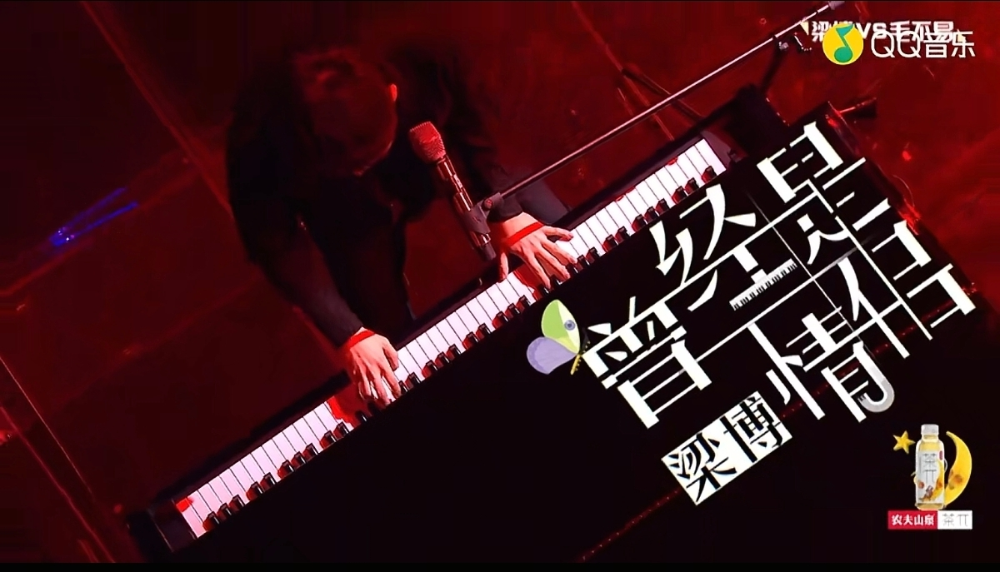
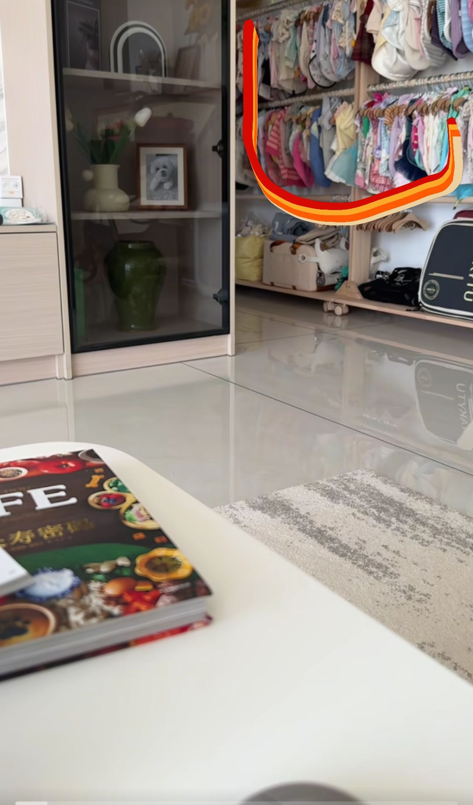
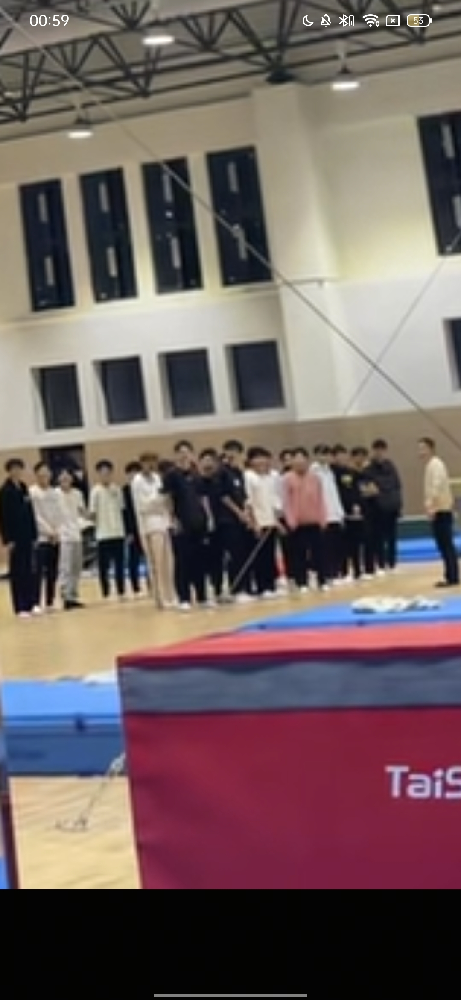
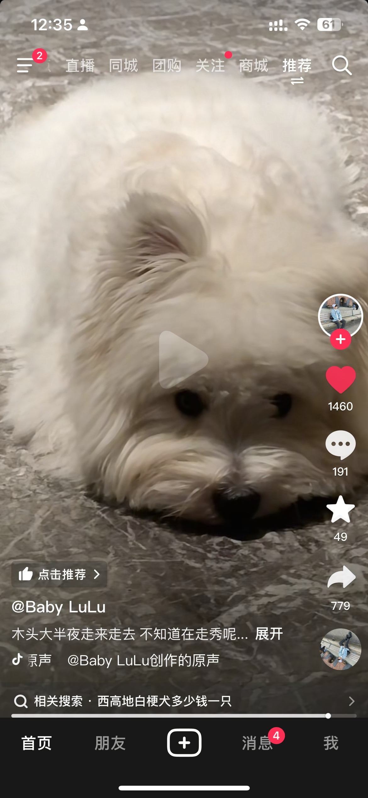
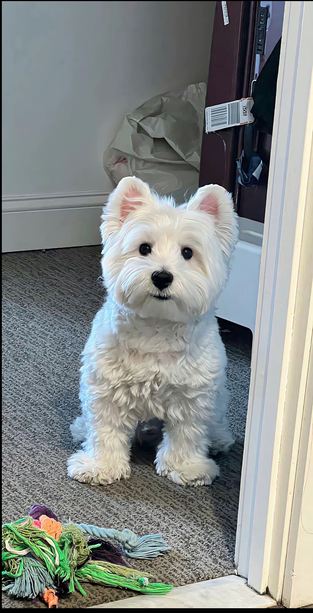
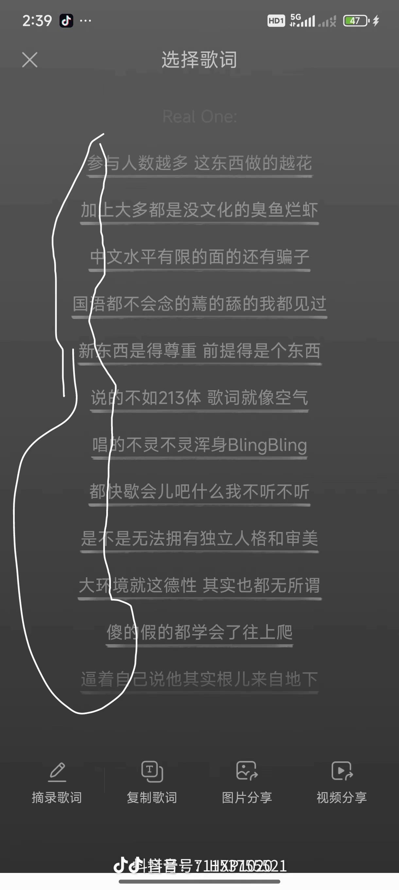
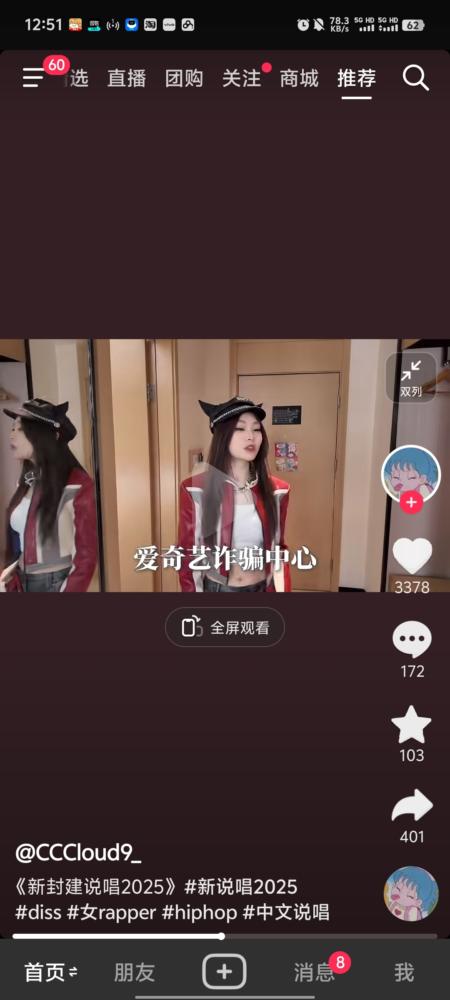
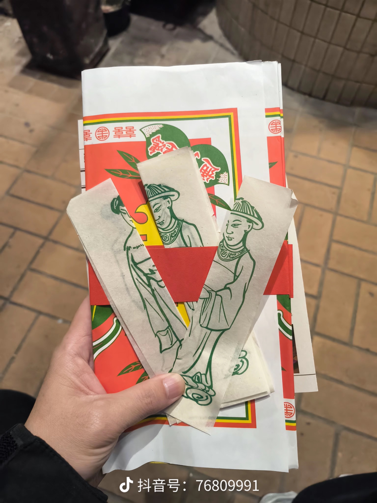

赵雷的粉丝在哪里？[流泪]
老师盘一下阿昆的《丢手绢》唱法独特又不好听，每次都忍不住跟着唱[送心]
老师能不能点评一下梁博我是唱作人《曾经是情侣》[感谢][感谢][感谢] 
你嫌弃它倒数第一可以送给我，它在我这里永远第一，天天吃鸡腿[不看]
它也是孩子呀，给它鸡腿🍗
我的快穿top，没有任何一本可以取代垃圾桶在我心里的位置，对了还有一件事，朱守成滚出来再死一死[愉快]
穿越不崩原主人设，帮原主保护嗓子，教原主在自己走后好好生活，小池给当年的小小老子狠狠上了一课[憨笑]
我正在砍朱守成，你也来一刀吧！！！！
至今没有忘记人鱼那篇我给站错了 小蛇我有多看好你你知道吗[憨笑][憨笑][憨笑][赞][赞][赞]
“若有长风绕旗，那便是我在想你”巨喜欢小将军那篇[色][色]
冬歌那个世界的 我多么希望再开一本。。。相当好磕了[流泪]
谁来把我打失忆让我再看一遍[黑脸]
它可比我的衣服几倍多，我活的还不如一条狗[泣不成声] 
比我领导通人性
这跟自己生的有什么区别[尬笑]
刚开始懒懒散散，后面直接行注目礼[九转大肠]
没有对异性的欣赏 只有对技术的崇拜
老师想拜师了可能[黑脸]
果然是我们体操队的超级无敌大排面
全是崇拜的眼神
你慢点 我看着手都痛[尬笑]
那些男生 : 一圈…两圈…三圈…四圈……
幺女加油[比心][比心][比心]
你会一拳把我打死吗
怎么这么厉害[求求了]
那些男的都在崇拜的看着你
这不就是我当兵时，让我差点去见我嗲的单杠八练习吗？超级大回环[裂开][裂开][裂开]
姐 他们把你当神了 [看][看][看] 
太牛了妹儿
教练:你们看看人家
源氏已经不关心醒狮了，已经完全沉浸在抽象之中了[捂脸]
今晚吃饱了
你大半夜不关灯你还怪他走来走去
不要对他太凶 他只是个小朋友来的 
不是 你的腿脚怎么这么像假的啊 [疑问]
这只吗 
川普：把昨天都作废。
小偷：这房子最值钱的就是这个锁[赞]
销售也太厉害了，这不亚于把梳子卖给和尚了[流泪][流泪]
小偷一脚给门踹开了转了一圈把锁偷走了[捂脸]
好的全部都在抖音上了
学历被节目组发现了吧
感觉评论区都是那种 老舅拯救了中文说唱的人[憨笑]
[赞] 
我还是那句话kris就是中文说唱绕不过的里程碑
禾伙人狠狠为这句话点赞 
女rapper写歌词真的不一样，能让人听进去[比心]
读了大学的唱rap就是不一样，听起来都有文化
空杆热身力竭了咋办[流泪]
要不我去买条瑜伽裤穿
那我还练个钩子啊[流泪]
别人说我又胖又丑[捂脸]
“全红婵水花消失术”“陈雨希水花消失术”
其实看了一眼名字就知道是谁了[憨笑][感谢]
应该把阿拉斯加海湾放第一个[流泪]
你低估自己了[舔屏]
唯一真神，《寂寞烟火》
我从你网名叫你的叽叽的时候就认识了
听之前：好大的口气 听之后：好大的名气
我相信阿拉斯加海湾是大多数人第一首听的[流泪]真的封神啊啊啊啊
谁懂寂寞烟火[流泪][流泪]
听的第一首你的歌是《小宇》
记得最开始的名字叫你的叽叽，露脸的时候被说有点斗鸡眼，那会最爱听的还是山楂树之恋[憨笑]
哭出来了
这个视频一镜到底的。。这哥们真是有演技。
卷毛今天国道有小孩局
碰一下
卷毛一开始不知道在拍摄，最后笑一下才是进入状态[憨笑]
威姆斯给人一种什么都输不掉的感觉[捂脸]
刚收到通知，今晚百分取消，moon崴脚了！
不熟悉性能，主观应该是谨慎慢行，市区开到120，主观就是故意，
是啊，我拿刀砍死人，也不知道这把刀如此锋利。我第一次用刀，我不熟悉刀的性能。
评论区现状
无意刷到 看完就走 自己不做亏心事 保佑我
你们都在开玩笑，而我时真的去打过啊[泪奔] 在香港可帮 
为啥我觉得不恐怖，只觉得这女孩可怜[宕机]
这哪里是恐怖文啊，这分明就是爽文啊
女鬼没啥好怕的，本质都是无辜的女孩，该怕的又不是我
Read more: